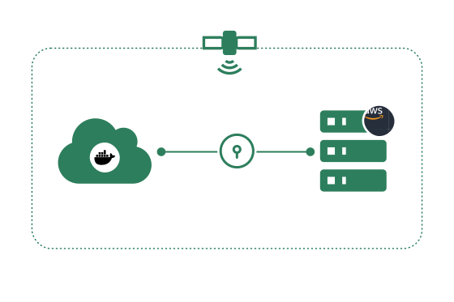

<div class="w-full">
  <div class="px-6 lg:px-10 max-w-7xl m-auto">
    <div class="py-6 px-6 lg:px-10 rounded-xl bg-[#f1fbff] pb-10 mt-6">
      <div>
        <div class="text-2xl lg:text-3xl font-semibold mb-6">Secure, in Your Cloud or On-Prem</div>

        <div class="flex flex-col-reverse lg:grid grid-cols-10">
          <div class="text-gray-500 text-lg col-span-5 lg:pr-6 pt-8 lg:pt-0">
            Earthly Satellites are shipped in lightweight Docker containers so they can be easily launched in your own environment. Satellites
            automatically use our fully managed mTLS system to ensure only your authorized build clients can connect to them.
            <div class="pt-4">
              With our available BYOC plan, your Satellites can be remotely managed by us within your own AWS account using our most secure
              configurations and a strict IAM role that you control.
            </div>
          </div>

          
        </div>
      </div>
    </div>
  </div>
</div>
